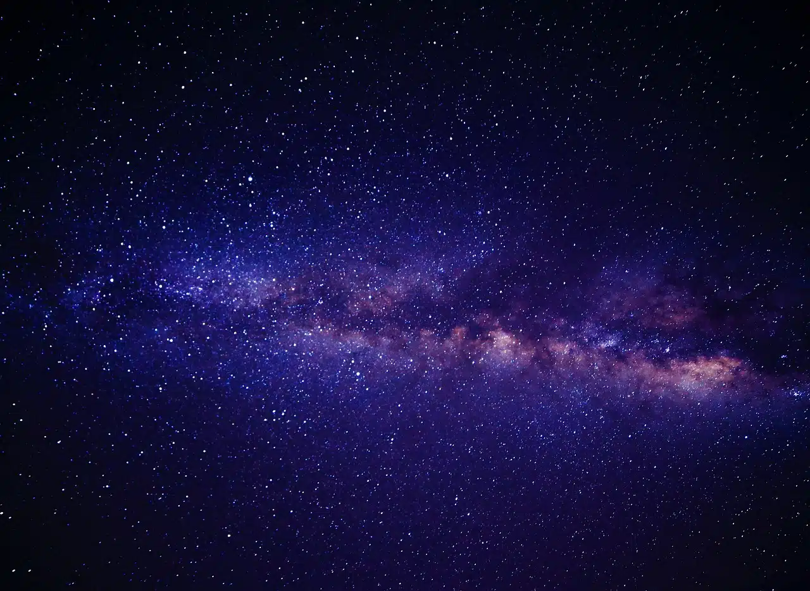

Luces en la Oscuridad: Descubriendo el Mágico Mundo de las Estrellas
"Las estrellas, faros luminosos en el vasto océano del espacio, son los objetos más misteriosos y
cautivadores
del universo. Nacidas de la danza cósmica entre el gas y el polvo, estas joyas celestiales nos regalan luz y
calor, y en sus núcleos ocurre una Danza nuclear que da vida a elementos esenciales. Algunas son gigantes
ardientes, mientras que otras son enanas tranquilas. Juntas, tejen el tapiz brillante de la noche, guiando
nuestros sueños y exploraciones en el cosmos. Las estrellas son los heraldos del tiempo, los forjadores. de
elementos y las guías de navegación que nos conectan con el infinito misterio del universo. En su luz
encontramos nuestra inspiración y en su muerte, los secretos que revelan el destino de las galaxias."

Las estrellas son objetos celestes luminosos que se forman por la acumulación de gas y polvo en el espacio,
principalmente hidrógeno y helio. Son una de las entidades más fundamentales y fascinantes del universo y
desempeñan un papel crucial en la astronomía y la cosmología
Las estrellas son objetos celestes increíblemente importantes que iluminan el cosmos, generan energía y
desempeñan un papel vital en la evolución y composición del universo que observamos.